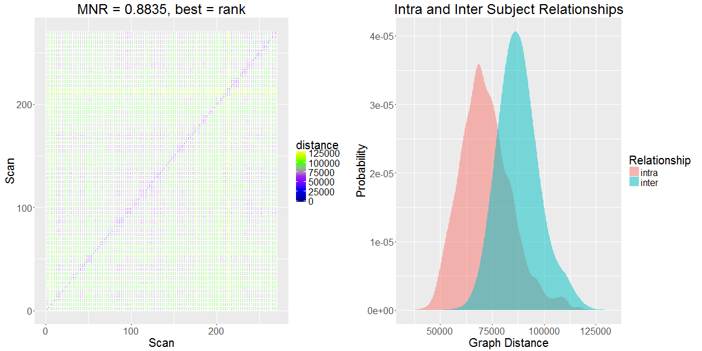
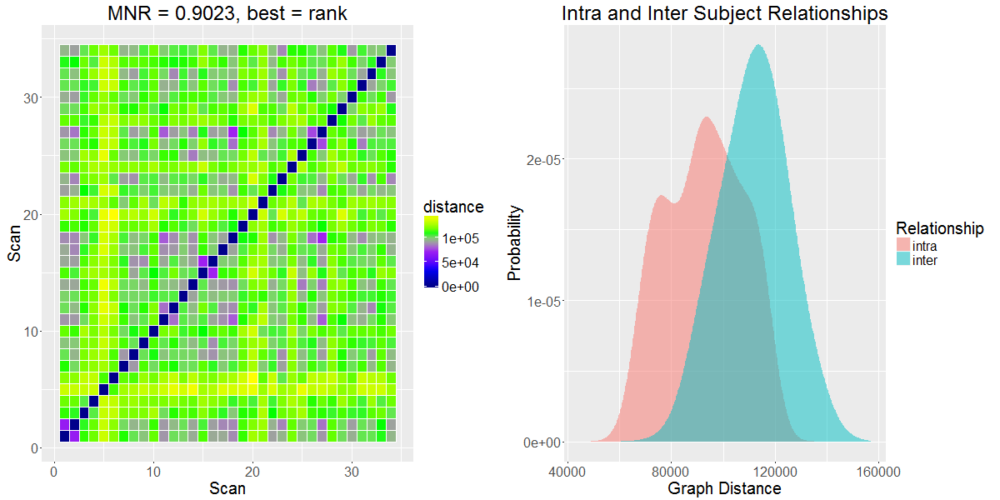

Design Team 0 Slides
Eric Bridgeford, Albert Lee, Eric Walker
FNGS pipeline leg overview
Eric Bridgeford
Week's Accomplishments
- Implemented Linear and Quadratic Drift removal (using CPAC methods)
- Finished a pipeline and analyzed for FNIRT brains (compared ts to kf-ts)
- Decided AGAINST smoothing
Results for Pipeline
- Note: first version of pipeline implementing FNIRT
HNU1, no kalman filter

HNU1, kalman filter

NKI, no kalman filter

NKI, kalman filter

DC1, no kalman filter

DC1, kalman filter

BNU1, no kalman filter

What this Means
- With some randomly chosen DLM, Kalman filtering helps
- Pessimistic: might not actually work, since this DLM is completely arbitrary
- Need to find how to optimize the DLM, so that when we filter we are doing it right
Quality Control for fMRI graphs
- Goal: create a repo for fMRI graphs that demonstrates between-dataset variances
- Similar to neurodata/dataset-variance, but those metrics don't really apply
- Decide which metrics to include
- Want to be able to run all of our discriminability analyses, and adds another layer of benchmarking for each pipeline as we improve
Things to do this week
- Merge ndmg-master into ndmg-eric-dev
- Run conversions to binary files from HCP dataset
- Figure out top n-component extraction for our pipeline
- Make R style guide and distribute ASAP
Kalman Filter EM Algorithm
Eric Walker
Javascript Image Analysis
Albert Lee
Sample Webpage for partial brain
Sample Webpage for complete brain